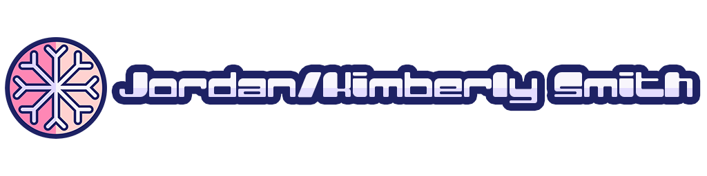

Created as one of my very first uses of After Effects. We were asked to record a video and edit it using at
least 2 filters overtop.
I used a video of my cat (Her name is Ranch) and messed with the pan, 3D rotate, twirl, and hue/saturation
filters.